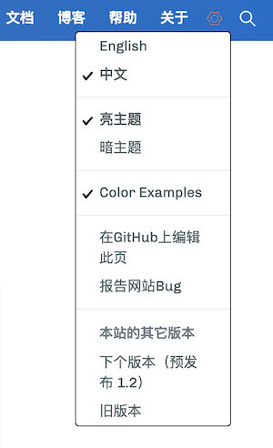
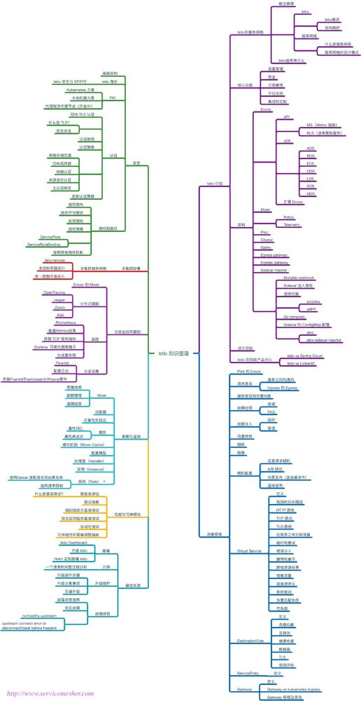

下面这段是发布说明，来自 Istio 官方博客 https://istio.io/zh/blog/2019/announcing-1.1/，译者宋净超。
Istio 于北京时间今日凌晨4点，太平洋时间下午1点 Istio 1.1 发布。
自从去年 7 月份 1.0 发布以来，为了帮助人们将 Istio 投入生产我们做了很多工作。我们不出所料得发布了很多补丁（到目前为止已经发布了 6 个补丁！），但我们也在努力为产品添加新功能。
1.1 版本的主题是”Enterprise Ready“（企业级就绪）。我们很高兴看到越来越多的公司在生产中使用 Istio，但是随着一些大公司加入进来，Istio 也遇到了一些瓶颈。
我们关注的主要领域包括性能和可扩展性。随着人们将 Istio 逐步投入生产，使用更大的集群以更高的容量运行更多服务，可能会遇到了一些扩展和性能问题。Sidecar 占用了太多资源增加了太多的延迟。控制平面（尤其是 Pilot）过度耗费资源。
我们投入了很多精力在使数据平面和控制平面更有效率上。在 1.1 的性能测试中，我们观察到 sidecar 处理 1000 rps 通常需要 0.5 个 vCPU。单个 Pilot 实例能够处理 1000 个服务（以及 2000 个 pod），需要消耗 1.5 个 vCPU 和 2GB 内存。Sidecar 在第 50 百分位增加 5 毫秒，在第 99 百分位增加 10 毫秒（执行策略将增加延迟）。
我们也完成了命名空间隔离的工作。您可以使用 Kubernetes 命名空间来强制控制边界以确保团队之间不会相互干扰。
我们还改进了多集群功能和可用性。我们听取了社区的意见，改进了流量控制和策略的默认设置。我们引入了一个名为 Galley 的新组件。Galley 验证 YAML 配置，减少了配置错误的可能性。Galley 还用在多集群设置中——从每个 Kubernetes 集群中收集服务发现信息。我们还支持了其他多集群拓扑，包括单控制平面和多个同步控制平面，而无需扁平网络支持。
更多信息和详情请查看发布说明。
该项目还有更多进展。众所周知 Istio 有许多可移动部件，它们承担了太多工作。为了解决这个问题，我们最近成立了 Usability Working Group（可用性工作组）（可随时加入）。社区会议（周四上午 11 点）和工作组里也发生了很多事情。您可以使用 GitHub 凭据登录 discuss.istio.io 参与讨论！
感谢在过去几个月里为 Istio 作出贡献的所有人——修补 1.0，为 1.1 增加功能以及最近在 1.1 上进行的大量测试。特别感谢那些与我们合作安装和升级到早期版本，帮助我们在发布之前发现问题的公司和用户。
最后，去浏览最新文档，安装 1.1 版本吧！Happy meshing！
官方网站
ServiceMesher 社区从 Istio 0.6 版本起一直在维护 Istio 官方文档的中文页面，截止2019年3月19日晚12点已有596个 PR 合并，共维护文档310余篇，感谢大家的努力！部分文档可能稍微滞后于英文版本，同步工作持续进行中，参与进来请访问 https://github.com/servicemesher/istio-official-translation Istio 官网每个页面右侧都有切换语言按钮，大家可以随时切换中英文版本，还可以提交文档修改，报告网站 Bug 等。

其他资料
Istio handbook
社区名义推出开源电子书《Istio Handbook——Istio 服务网格进阶实战》，ServiceMesher 社区作为中国最早的一批在研究和推广 Service Mesh 技术的开源社区决定整合社区资源，合作撰写一本开源电子书作为服务网格智库。
GitHub 地址：https://github.com/servicemesher/istio-handbook
在线浏览地址：http://www.servicemesher.com/istio-handbook/
Istio 知识图谱
Istio 知识图谱是由 ServiceMesher 社区成员协作编制的 Istio Service Mesh 中的知识结构图谱。
Istio 知识图谱 GitHub 地址：https://github.com/servicemesher/istio-knowledge-map

ServiceMesher 社区网站
ServiceMesher 社区网站 http://www.servicemesher.com 上涵盖了所有 Service Mesh 领域的技术文章，并适时发布最新活动，是您一站式了解 Service Mesh 和参与社区的入口。